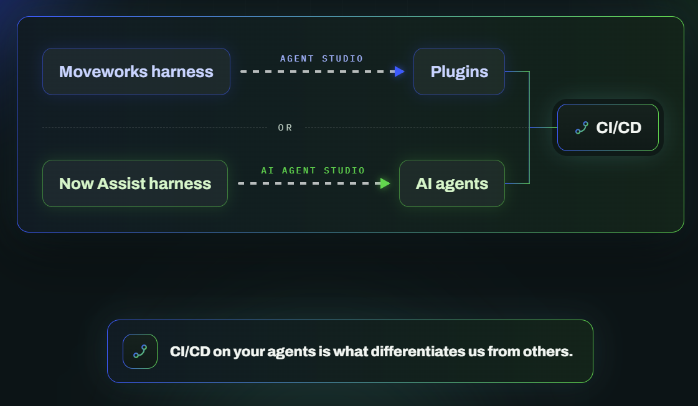

ukg_accruals_balance211
Employees ask “How much vacation, sick or personal leave do I have?” and get their current balance from UKG.
Download a plugin's XML and import it on your end.
HTTP actions Compound actions Conversational process

Employees ask “How much vacation, sick or personal leave do I have?” and get their current balance from UKG.
Employees request time off in the chat. Before it’s sent, they see the type, the dates and who will approve it. Then it goes to their manager.
“Who is Jordan’s manager?” Shows a coworker’s manager, job title and location.
“How much time off do I have?” Shows the employee’s balances from Workday.
Employees pick the type of time off and the dates, confirm, and the request goes into Workday for approval.
Managers ask “Who reports to me?” and see their team.
“I need access to the finance share.” Employees find the access they need and request it. It follows the normal approval path.
“Where is my access request?” Shows where it stands and who it’s waiting on.
Approvers see the requests waiting on them and approve or reject them in the chat.
Reviewers see which access reviews they owe and how much is left, with a link to finish them in SailPoint.
Owners see the service accounts and bots they’re responsible for, and can hand one to a new owner. Needs Agentic Fabric, or the older Machine Identity Security add-on.
“Where’s my purchase order?” Shows its status and the supplier.
“Was my expense report approved?” Shows the status of the employee’s expense reports.
“How much time off do I have?” for companies on SuccessFactors.
Employees request time off in SuccessFactors from the chat.
